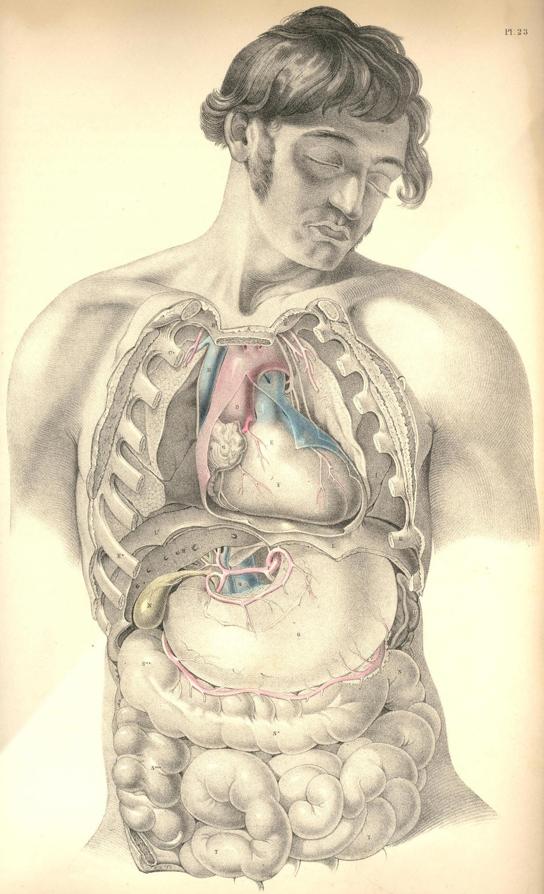

SURGICAL ANATOMY by JOSEPH MACLISE
COMMENTARY ON PLATE 23.
THE RELATIVE POSITION OF THE DEEPER ORGANS
OF THE THORAX AND THOSE OF THE ABDOMEN.
The size or capacity of the thorax in relation to that of the abdomen
varies in the individual at different periods of life. At an early age,
the thorax, compared to the abdomen, is less in proportion than it is at
adult age. The digestive organs in early age preponderate considerably
over the respiratory organs; whereas, on the contrary, in the healthy
and well-formed adult, the thoracic cavity and organs of respiration
manifest a greater relative proportion to the ventral cavity and organs.
At the adult age, when sexual peculiarities have become fully marked,
the thoracic organs of the male body predominate over those of the
abdomen, whilst in the female form the ventral organs take precedence as
to development and proportions. This diversity in the relative capacity
of the thorax and abdomen at different stages of development, and also
in persons of different sexes, stamps each individual with
characteristic traits of physical conformation; and it is required that
we should take into our consideration this normal diversity of
character, while conducting our examinations of individuals in reference
to the existence of disease.
The heart varies in some measure, not only as to size and weight, but
also as to position, even in healthy individuals of the same age and
sex. The level at which the heart is in general found to be situated in
the thorax is that represented in PLATE 23, where the apex points to the
sixth intercostal space on the left side above K, while the arch of the
aorta rises to a level with C, the second costal cartilage. In some
instances, the heart may be found to occupy a much lower position in the
thorax than the one above mentioned, or even a much higher level. The
impulse of the right ventricle, F, has been noticed occasionally as
corresponding to a point somewhat above the middle of the sternum and
the intercostal space between the fourth and fifth left costal
cartilages; while in other instances its beating was observable as low
down as an inch or more below the xiphoid cartilage, and these
variations have existed in a state of health.
Percussion over the region of the heart yields a dull flat sound. The
sound is dullest opposite the right ventricle, F; whilst above and to
either side of this point, where the heart is overlapped by the anterior
shelving edges of both lungs, the sound is modified in consequence of
the lung's resonant qualities. The heart-sounds, as heard through the
stethoscope, in valvular disease, will, of course, be more distinctly
ascertained at the locality of F, the right ventricle, which is
immediately substernal. While the body lies supine, the heart recedes
from the forepart of the chest; and the lungs during inspiration
expanding around the heart will render its sounds less distinct. In the
erect posture, the heart inclines forwards and approaches the anterior
wall of the thorax. When the heart is hypertrophied, the lungs do not
overlap it to the same extent as when it is of its ordinary size. In the
latter state, the elastic cushion of the lung muffles the heart's
impulse. In the former state, the lung is pushed aside by the overgrown
heart, the strong muscular walls of which strike forcibly against the
ribs and sternum.
The thorax is separated from the abdomen by the moveable diaphragm. The
heart, F E, lies upon the diaphragm, L L*. The liver, M, lies
immediately beneath the right side of this muscular septum, L*, while
the bulging cardiac end of the stomach, O, is in close contact with it
on the left side, L. As these three organs are attached to the
diaphragm--the heart by its pericardium, the stomach by the tube of the
oesophagus, and the liver by its suspensory ligaments--it must happen
that the diaphragm while descending and ascending in the motions of
inspiration and expiration will communicate the same alternate motions
to the organs which are connected with it.
In ordinary respiration the capacity of the thorax is chiefly affected
by the motions of the diaphragm; and the relative position which this
septum holds with regard to the thoracic and abdominal chambers will
cause its motions of ascent and descent to influence the capacity of
both chambers at the same time. When the lungs expand, they follow the
descent of the diaphragm, which forces the abdominal contents downwards,
and thus what the thorax gains in space the abdomen loses. When the
lungs contract, the diaphragm ascends, and by this act the abdomen gains
that space which the thorax loses. But the organs of the thoracic cavity
perform a different office in the economy from those of the abdomen. The
air which fills the lungs is soon again expired, whilst the ingesta of
the abdominal viscera are for a longer period retained; and as the
space, which by every inspiration the thorax gains from the abdomen,
would cause inconvenient pressure on the distended organs of this latter
cavity, so we find that to obviate this inconvenience, nature has
constructed the anterior parietes of the abdomen of yielding material.
The muscular parietes of the abdomen relax during every inspiration, and
thus this cavity gains that space which it loses by the encroachment of
the dilating lungs.
The mechanical principle upon which the abdominal chamber is
constructed, enables it to adjust its capacity to such exigence or
pressing necessity as its own visceral organs impose on it, from time to
time; and the relation which the abdominal cavity bears to the thoracic
chamber, enables it also to be compensatory to this latter. When the
inspiratory thorax gains space from the abdomen, or when space is
demanded for the increasing bulk of the alimentary canal, or for the
enlarging pregnant uterus; or when, in consequence of disease, such as
dropsical accumulation, more room is wanted, then the abdominal chamber
supplies the demand by the anterior bulge or swell of its expansile
muscular parietes.
The position of the heart itself is affected by the expansion of the
lungs on either side of it. As the expanding lungs force the diaphragm
downwards, the heart follows it, and all the abdominal viscera yield
place to the descending thoracic contents. In strong muscular efforts
the diaphragm plays an important part, for, previously to making forced
efforts, the lungs are distended with air, so as to swell and render
fixed the thoracic walls into which so many powerful muscles of the
shoulders, the neck, back, and abdomen, are inserted; at the same time
the muscular diaphragm L L*, becomes tense and unbent from its arched
form, thereby contracting abdominal space, which now has no compensation
for this loss of space, since the abdominal parietes are also rendered
firm and unyielding. It is at this crisis of muscular effort that the
abdominal viscera become impacted together; and, acting by their own
elasticity against the muscular force, make an exit for themselves
through the weakest parts of the abdominal walls, and thus herniae of
various kinds are produced. The most common situations of abdominal
herniae are at the inguinal regions, towards which the intestines, T T,
naturally gravitate; and at these situations the abdominal parietes are
weak and membranous.
The contents of a hernial protrusion through the abdominal parietes,
correspond in general with those divisions of the intestinal tube, which
naturally lie adjacent to the part where the rupture has taken place. In
the umbilical hernia it is either the transverse colon S*, or some part
of the small intestine occupying the median line, or both together, with
some folds of the omentum, which will be found to form the contents of
this swelling. When the diaphragm itself sustains a rupture in its left
half, the upper portion of the descending colon, S, protrudes through
the opening. A diaphragmatic hernia has not, so far as I am aware, been
seen to occur in the right side; and this exemption from rupture of the
right half of the diaphragm may be accounted for anatomically, by the
fact that the liver, M, defends the diaphragm at this situation. The
liver occupies the whole depth of the right hypochondrium; and
intervenes between the diaphragm L*, and the right extremity of the
transverse colon, S**.
The contents of a right inguinal hernia consist of the small intestine,
T. The contents of the right crural hernia are formed by either the
small intestine, T, or the intestinum caecum, S***. I have seen a few
cases in which the caecum formed the right crural hernia. Examples are
recorded in which the intestine caecum formed the contents of a right
inguinal hernia. The left inguinal and crural herniae contain most
generally the small intestine, T, of the left side.
The right lung, I*, is shorter than the left; for the liver, M, raises
the diaphragm, L, to a higher level within the thorax, on the right
side, than it does on the left. When the liver happens to be diseased
and enlarged, it encroaches still more on thoracic space; but,
doubtless, judging from the anatomical connexions of the liver, we may
conclude that when it becomes increased in volume it will accommodate
itself as much at the expense of abdominal space. The liver, in its
healthy state and normal proportions, protrudes for an inch (more or
less) below the margins of the right asternal ribs. The upper or convex
surface of the liver rises beneath the diaphragm to a level
corresponding with the seventh or sixth rib, but this position will vary
according to the descent and ascent of the diaphragm in the respiratory
movements. The ligaments by which the liver is suspended do not prevent
its full obedience to these motions.
The left lung, I, descends to a lower level than the right; and the left
diaphragm upon which it rests is itself supported by the cardiac end of
the stomach. When the stomach is distended, it does not even then
materially obstruct the expansion of the left lung, or the descent of
the left diaphragm, for the abdominal walls relax and allow of the
increasing volume of the stomach to accommodate itself. The spleen, R,
is occasionally subject to an extraordinary increase of bulk; and this
organ, like the enlarged liver and the distended stomach, will, to some
extent, obstruct the movements of the diaphragm in the act of
respiration, but owing to its free attachments it admits of a change of
place. The abdominal viscera, one and all, admit of a change of place;
the peculiar forms of those mesenteric bonds by which they are
suspended, allow them to glide freely over each other; and this
circumstance, together with the yielding nature of the abdominal
parietes, allows the thoracic organs to have full and easy play in the
respiratory movements performed by agency of the diaphragm.
The muscles of respiration perform with ease so long as the air has
access to the lungs through the normal passage, viz., the trachea. While
the principle of the thoracic pneumatic apparatus remains underanged,
the motor powers perform their functions capably. The physical or
pneumatic power acts in obedience to the vital or muscular power, while
both stand in equilibrium; but the ascendancy of the one over the other
deranges the whole thoracic machine. When the glottis closes by muscular
spasm and excludes the external air, the respiratory muscles cease to
exert a motor power upon the pulmonary cavity; their united efforts
cannot cause a vacuum in thoracic space in opposition to the pressure of
the external air. When, in addition to the natural opening of the
glottis, a false opening is made in the side at the point K, the air
within the lung at I, and external to it in the now open pleural cavity,
will stand in equilibrio; the lung will collapse as having no muscular
power by which to dilate itself, and the thoracic dilator muscles will
cease to affect the capacity of the lung, so long as by their action in
expanding the thoracic walls, the air gains access through the side to
the pleural sac external to the lung.
Whether the air be admitted into the pleural sac, by an opening made in
the side from without, or by an opening in the lung itself, the
mechanical principle of the respiratory apparatus will be equally
deranged. Pneumo-thorax will be the result of either lesion; and by the
accumulation of air in the pleura the lung will suffer pressure. This
pressure will be permanent so long as the air has no egress from the
cavity of the pleura.
The permanent distention of the thoracic cavity, caused by the
accumulation of air in the pleural sac, or by the diffusion of air
through the interlobular cellular tissue consequent on a wound of the
lung itself, will equally obstruct the breathing; and though the
situation of the accumulated air is in fact anatomically different in
both cases, yet the effect produced is similar. Interlobular pressure
and interpleural pressure result in the same thing, viz., the permanent
retention of the air external to the pulmonary cells, which, in the
former case, are collapsed individually; and, in the latter case, in the
mass. Though the emphysematous lung is distended to a size equal to the
healthy lung in deep inspiration, yet we know that emphysematous
distention, being produced by extrabronchial air accumulation, is, in
fact, obstructive to the respiratory act. The emphysematous lung will,
in the same manner as the distended pleural sac, depress the diaphragm
and render the thoracic muscles inoperative. The foregoing observations
have been made in reference to the effect of wounds of the thorax, the
proper treatment of which will be obviously suggested by our knowledge
of the state of the contained organs which have suffered lesion.
DESCRIPTION OF PLATE 23.
A. Upper end of the sternum.
B B.* First pair of ribs.
C C.* Second pair of ribs.
D. Aorta, with left vagus and phrenic nerves crossing its transverse
arch.
E. Root of pulmonary artery.
F. Right ventricle.
G. Right auricle.
H. Vena cava superior, with right phrenic nerve on its outer border.
I I*. Right and left lungs collapsed, and turned outwards, to show the
heart's outline.
K K*. Seventh pair of ribs.
L L*. The diaphragm in section.
M. The liver in section.
N. The gall bladder with its duct joining the hepatic duct to form the
common bile duct. The hepatic artery is seen superficial
to the common
duct; the vena portae is seen beneath it. The patent
orifices of the
hepatic veins are seen on the cut surface of the liver.
O. The stomach.
P. The coeliac axis dividing into the coronary, splenic and hepatic
arteries.
Q. Inferior vena cava.
R. The spleen.
S S* S**. The transverse colon, between which and the lower border of
the stomach is
seen the gastro-epiploic artery, formed by
the splenic and hepatic arteries.
S***. Ascending colon in the right iliac region.
T. Convolutions of the small intestines distended with air.

Plate 23
COMMENTARY ON PLATE 24